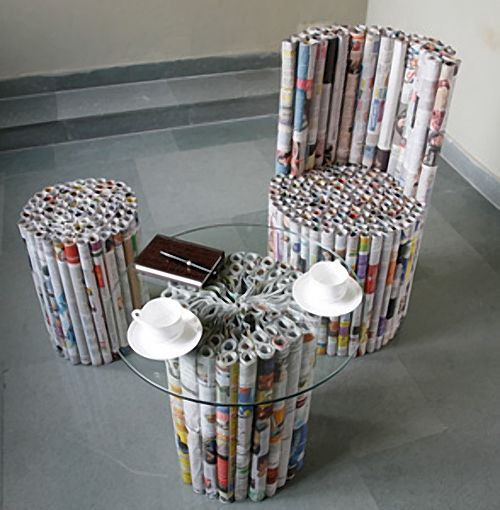

|  |
|
ECONOMÍA CIRCULAR EN TU PROPIO HOGAR: HAZLO TÚ MISMO
Seguramente piensas que el término de economía circular no te concierne, pero no es así. La economía circular la generamos todos, y todos podemos desarrollarla, incluso en tu propio hogar. Teniendo en cuenta que en su base se encuentran las famosas tres erres:
reducir, reciclar y reutilizar; podrás empezar a pensar que puedes reducir de tu vida cotidiana. Reducir significa vivir con menos, en todos los sentidos. Menos productos, y, por supuesto, menos dinero. Sí, esa es otra parte que valorarás. Los ejemplos son más
significativos e ilustrativos. Puedes comenzar recargando tus bolígrafos. Puede que te suene extraño, pero en las papelerías todavía venden recargas para bolígrafos, solo necesitas llevarlo para que puedan aconsejarte de cuál sería el más adecuado. |